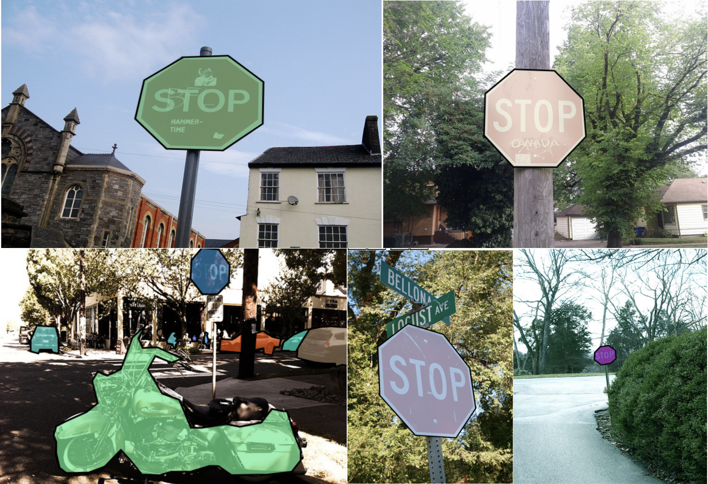
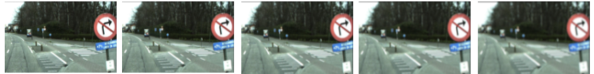
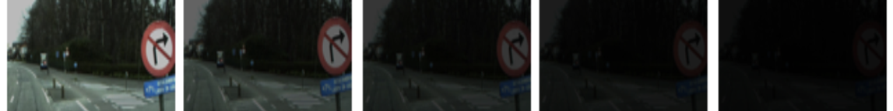
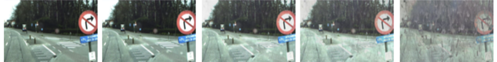
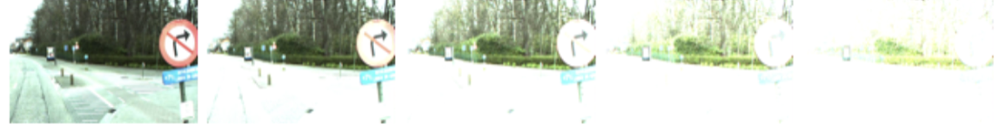
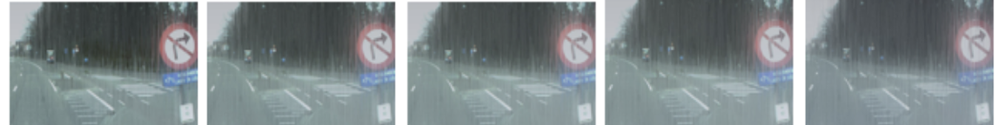
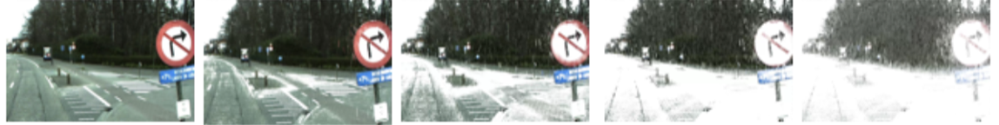
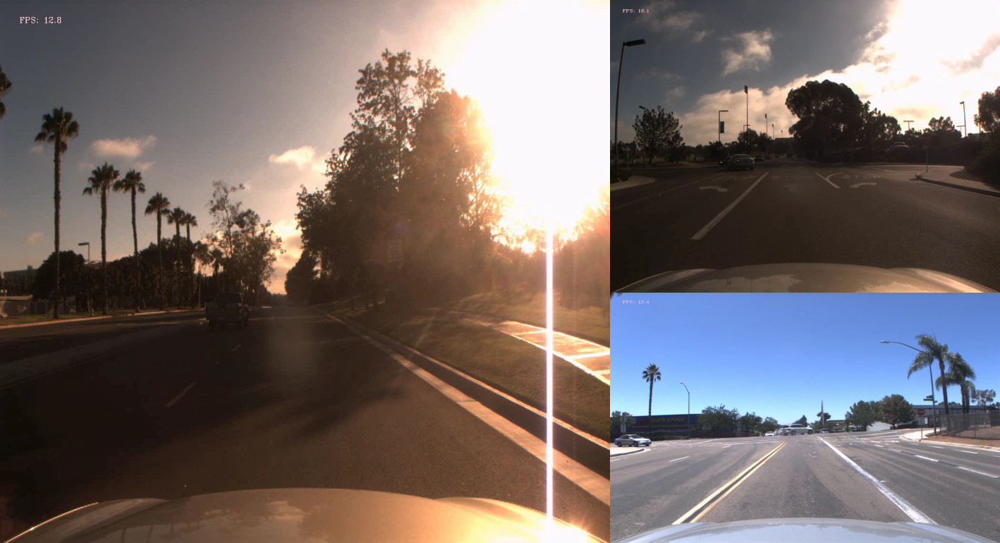

Background
Traffic signs play a significant role in the modern traffic system, and it becomes even more important in recent years due to the emergence of autonomous vehicles. The problem we are aiming to solve is to use the computer vision technologies to do the stop sign detection under different driving scenarios and extreme cases.
Motivation
With the development of autonomous vehicles, recognizing stop signs plays a very important role. Although in the future, when connected autonomous vehicles are developed, this may be solved by using roadside units sending instructions to the vehicles, nowadays, we still need to rely on the vehicles themselves to recognize these signs. Furthermore, vehicles that can recognize traffic signs will improve the driving experiences and safety for the drivers. Most drivers may have experienced situations when they were driving too fast on the highways and did not see clearly what the road guidance sign tells, hence driving to the wrong direction. In other cases, drivers may not see speed limit signs when the environment is dark, hence getting a ticket on over speeding.
These scenarios can all be avoided as long as we can develop an application that can automatically recognize the traffic signs. The vehicles that are equipped with this application can extract the key information, and either speak it out or display it on the head-up displays (HUD).
For our project, we focus on stop sign detection.
Current state-of-the-art
In general speaking of stop signs detection technology, it’s already well developed. It is a significant part of Advanced driver-assistance systems(ADAS). Such technologies are already used broadly by vehicle manufacturers on their products, such as BMW, Ford and Volvo, to improve the performance and safety. Most cars with an ADAS are able to detect stop signs.
The cornerstones of the stop signs detection are based on two facts:
- The features of stop signs are identical in the U.S. There is a standard of the design and size of all traffic sign published by MUTCD in the U.S.
- The cutting-edge algorithms enable cars to analyze and understand the content of stop signs.
The concept was brought up in 1968, but the recent blossom was triggered by the breaking through in hardware and machine learning algorithms.
Following are some widely-used approaches to the problem:
- Histogram of oriented gradients (HOG) + supervised learning (SVM, random forest)
- Deep learning approaches (RCNN, Mask-RCNN, Fast-RCNN, YOLO, ...)
Structure of the webpage
In the following of the webpage, we will talk about the two approaches we implemented: the deep learning approach and the traditional computer vision approach associated with the RBF kernel SVM classifier.
Approach 1 - deep learning
Overview
In this part, we tried to use YOLOv3 (You Only Look Once v3) to perform traffic sign detection with COCO dataset and LISA Traffic Sign Dataset (LISA-TS), we examed our results by using challenging condition pictures.
First try: YOLOv3 + COCO
COCO data set
COCO is a large-scale object detection, segmentation, and captioning dataset. We chose COCO as our data set because we do not need to reformat the annoation, and COCO has a large set of training data of stop sign.
The resolution of the training data is high and all pictures were taken under normal conditions.
A peek of COCO data set:
Input data preparation
We used COCO API to preprocess our data using the following command:
# get all images containing given categories, select one at random
catIds = coco.getCatIds(catNms=['stop_sign']);
imgIds = coco.getImgIds(catIds=catIds );
YOLOv3
YOLOv3 is a very famous object detector, which has the following advantages:
- Fast: Can perform detection in 30FPS live video
- Arcurate: Have a fairly good arcuracy in pre-trained model
- Active community: Easy to find solution
Training YOLOv3
We used the following packages and facilities to help us train the model:
- OS: Ubuntu 18.04 LTS
- CUDA: 10.01
- GPU: GTX 2080 Ti
- OPENCV: 3.4.4
Results
Normal cases:
Our result for normal cases was good, and the IOU was 0.973 as following:
Extreme cases:
There are some extreme cases when we drive the cars as following pictures. YOLOv3 failed for all of the cases.

Extreme cases:
There are some extreme cases when we driving the cars as following pictures. YOLOv3 failed for all of the cases.

Extreme cases summary:
We summarize the extreme cases as following:
Problem 1. Len Blur
Problem 2. Darkening
Problem 3. Dirty lens
Problem 4. Over-exposure
Problem 5. Rain
Problem 6. Snow
Problem 7. Haze
Solution
We want to solve the extreme cases problem by reselect data set and image preprossing.
Better datasets:
- LISA-TS (http://cvrr.ucsd.edu/LISA/lisa-traffic-sign-dataset.html)
- Pros: North America Standard and cConsover all traffic sign types.
- Cons: The format of annotations does not match our need, lack of essential information and does not have extreme cases.
- CURE-TSR (https://ghassanalregib.com/cure-tsr/)
- Pros: Includes corner cases.
- Cons: Format of annotations.
- Belgium-TS (https://btsd.ethz.ch/shareddata/)
- GTSB (http://benchmark.ini.rub.de/?section=gtsrb&subsection=dataset)
We finally chose the LISA-TS as our trianing data set. Following is the peek of LISA-TS:
CV pre-processing:
Our algorithm is as following:YOLO-Tiny + LISA-TS
Based on our solutions analyzed above, we choose YOLO-Tiny + LISA-TS as the final model.
Data-Preparation : We applied a set of tools to help us prepare the data.
YOLO-Tiny : Instead of 102 layers of YOLOv3, YOLO-Tiny only has 9 layers, which means faster to trian.
Model Configurations :
- Batches = 64
- Subdivision = 8
- maxbathes = 60000
- steps = 48000, 54000
- Momentum = 0.9
- learning_rate=0.001
- burn_in=1000
Training :
- OS: Ubuntu 18.04 LTS
- CUDA: 10.01
- GPU: GTX 2080 Ti
- OPENCV: 3.4.4
Results:
Approach 2 - SVM + HOG
Algorithm
Our second approach is called SVM + HOG approach. It includes image processing, ROI (region of interest) selection, HOG feature extraction and supervised learning.
Our detailed algorithm is shown below.
Datasets
Original datasets
We randomly downloaded around 135 pictures that contain one or more stop signs from the Internet, to form our original positive dataset. Some of them are shown below.


For negative dataset, we download 415 pictures from [1]. All the pictures do not contain any stop signs. Here are some of them.


Positive training dataset
The generation of positive training dataset requires a set of image processing steps. Here we use an example [2] to illustrate the process how we crop the ROI to generate our positive training dataset.
Step 1, convert the orignial image to HSV color ranges. HSV stands for hue, saturation and value, and is more robust to color segmentation. We define a color range to select out all the red objects, as shown below.
Step 2, we use a set of morphological transformations, including dialation and erosiion, to romove the noise in the image.

Step 3, we fill in holes within each connected component. As you will see, after filling the holes, the text "stop" in the stop sign is removed. In this way, we can remove unneccessary contours and decrease the number of ROI candidates to reduce the running time and hence increase the detection accuracy.

Step 4, we set a threshold, and discard all the contours with size smaller than that threshold. With this, we can remove small (unneccessary) objects.
Step 5, for each contour, or connected component, we find its top left and bottom right coordinates. By multiplying these coordinates with some slack factor (here we used 1.1), we can draw the bounding boxes. Each subimage in the bounding boxes is a ROI candidate.

Step 6, removing all the small bounding boxes that are involved in some larger bounding boxes gives us all the ROI candidates.
Step 7, select out all the subimages within each bounding box and scale them to the same size.

Step 8, remove all the false positives, and keep only the correct ones in our positive training dataset.
The image below shows part of our positive training dataset, which represents normal conditions as well as some extreme conditions including raining, snowing, blurring and darkness.

Negative training dataset
We resized our original negative images (images do not contain stop signs) to some fixed size to form the negative training dataset. Part of the dataset is shown below.
Training (HOG + SVM)
We extracted HOG features for each image from our positive and negative training dataset. Using the feature of each item as well as their labels, we feed into our weigthed RBF kernel SVM classifier for training.
Testing
Whenever we get a test image, let's takes the example image we used above for generating the positive training dataset, we can extract ROI candidates following the same steps as we generate positive training dataset. Hence, for the example image, we have the following steps for testing.

That is, given the extracted ROIs, we extract HOG features for each of them. Feed the HOG featues into our trained RBF kernel SVM classifier and test whether it is positive or negative. If positive, we select that ROI and draw a green bouding box around it. Our final result is shown below.

Results
We tested our model on images taken under extreme weather conditions as well as those with complex backgrounds (images with a lot of confusing red objects that are very similar to stop signs). Our model was very robust to these conditions and can detect the stop signs in these images accurately.

Furthermore, we drove in the city of Madison, WI in both rainy and sunny days and took the videos. Our model again showed robust ability of detecting and tracking the stop signs under different scenarios. Videos are shown below.
Discussion
Running time
This SVM + HOG approach is relatively fast compared to other models. For example, the one minute video takes about two minutes to process, and we can see the very small stop signs can even be detected.
Acutally, the running time largely depends on how much accuracy we want to achieve. If we make the threshold larger, more small objects will be filtered out and we can only detect the stop signs that are large enough (in pixels). However, if we want to detect the stop signs faraway, we have to make the threshold smaller and that will take more time to process.
Pros
Here are some of the advantages of our HOG + SVM model:
- The running time is good compared to other models, especially to deep learning models.
- It can achieve high accuracy if the threshold is small enough.
- It can detect robustly under most extreme weather conditions, especially in cloudy, rainy and snowy weather.
- It is easy to implement and it does not need expensive hardware.
Cons
Although the results (images and videos) show that our model is very robust to some of the extreme conditions, there are still certain cases where this model cannot work very well. These include:
- The weather is extremely dark, then our color mask will just filter out the stop signs.
- When there are red objects covering or connecting to part of the stop sign, the image processing process will treat them as a single object, and hence the supervised learning classifier will vote for "no".
References
- http://vision.stanford.edu/projects/OPTIMOL/category/stop-sign/catmain.html
- https://www.brooklynpaper.com/assets/photos/40/14/dtg-dumbo-stop-sign-safest-ever-2017-04-07-bk01_z.jpg